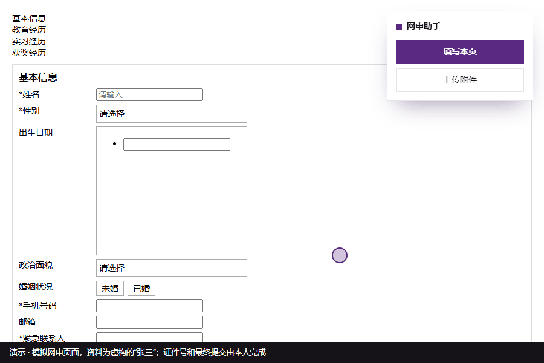

问题 / PROBLEM
同一份简历，要在每家网申系统里重填一遍。
秋招投递时，北森、hotjob、前程无忧、国聘等招聘系统的表单各不相同，同一份简历要反复手填。
我先把问题拆开：梳理出约 100 个常见字段和 20 余种表单控件，比如日期面板、虚拟滚动列表、省市联动。这些控件正是手填最耗时、也最容易出错的地方。
约 100个常见字段
20+种表单控件
7 类招聘系统已适配
方案与人机分工 / DESIGN
规则识别为主、AI 处理例外、人工确认提交。
一份个人资料库加一份自定义问答库，适配各家招聘系统。插件按标签文字识别字段并填写，识别不了的交给 AI 补漏；登录、验证码、证件号和最终提交，始终留给本人。
- AI选岗
- 插件填写
- AI补漏
- 本人核对提交
交给插件和 AI
- 识别并填写输入框、下拉框、日期面板、单选 / 多选、省市联动
- 按“照片 / 简历 / 成绩单”等标签上传附件
- 按“题目关键词 → 答案”填写各公司特有的问题
- 填完列出哪些字段没填上，方便补漏
留给本人
- 登录与验证码
- 证件号
- 最后的“提交 / 投递”
- 提交前逐项核对
个人资料只保存在本机浏览器里，插件不向任何服务器发送数据。
Agent 接口 / AGENT API
让 AI 助手直接调用插件，并读回结果。
我设计了网页内的调用接口：AI 助手可以直接触发填写、上传和重新加载，并读回结构化结果，也就是哪些字段已填、哪些失败。这样就不用再人工复制诊断信息，“发现问题—修复”的往返也更短。
window.wszs.fill()填写当前页面，返回已填字段与失败字段window.wszs.upload()按标签上传照片、简历等附件window.wszs.reload()重新加载window.wszs.ping()检查插件是否在线迭代与数据 / ITERATION
在真实网申里逐家测试，3 天迭代 15 个以上版本。
按“发现—修复—回归测试”的闭环推进：每次发布前在 12 个模拟页面上跑回归测试，同时维护问题与版本记录。
15+个版本 / 3 天
12个模拟页面做回归测试
52%AI 用量来自浏览器操作
13个岗位正式投递
统计 AI 协作用量后发现，对话上下文过长是主要成本，浏览器操作占 52%，于是改为分批会话、合并操作。选岗时，用 AI 从 1.1 万条校招汇总数据中按城市、方向筛选岗位并排出优先级。
目前已用于中远海运、中国电信、北京城建等企业 13 个岗位的正式投递。
| 系统 | 情况 |
|---|---|
| 北森（zhiye.com 及定制域名） | 支持 |
| hotjob 电脑版（Wecruit） | 支持 |
| 前程无忧 51job（传统表格、wt 系统、CRMS） | 支持 |
| Ant Design / Element 等组件库做的自建系统 | 支持 |
| 国聘 iguopin（展示页 + 分块编辑） | 部分支持 |
| hotjob 移动版 | 暂不支持 |
演示 / DEMO
点一下，填好能识别的格子。

开源 / OPEN SOURCE
去除个人信息的开源版本。
开源版本自带的资料模板是空白的，不含任何真实个人信息；安装方法和已适配的系统写在说明文档里。
这个项目由我担任产品负责人，与 AI（Claude）协作完成需求定义、开发、测试和迭代；过程中产出了需求说明、问题与版本记录和回归测试集。